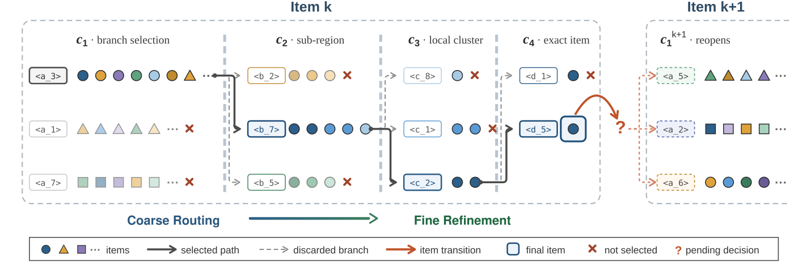
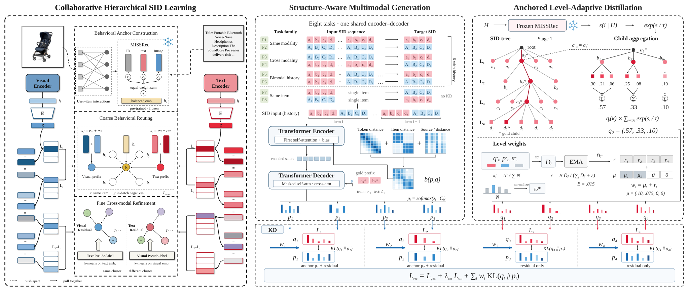
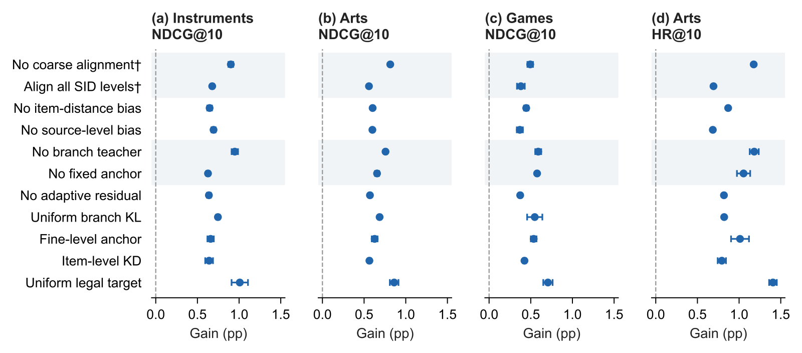
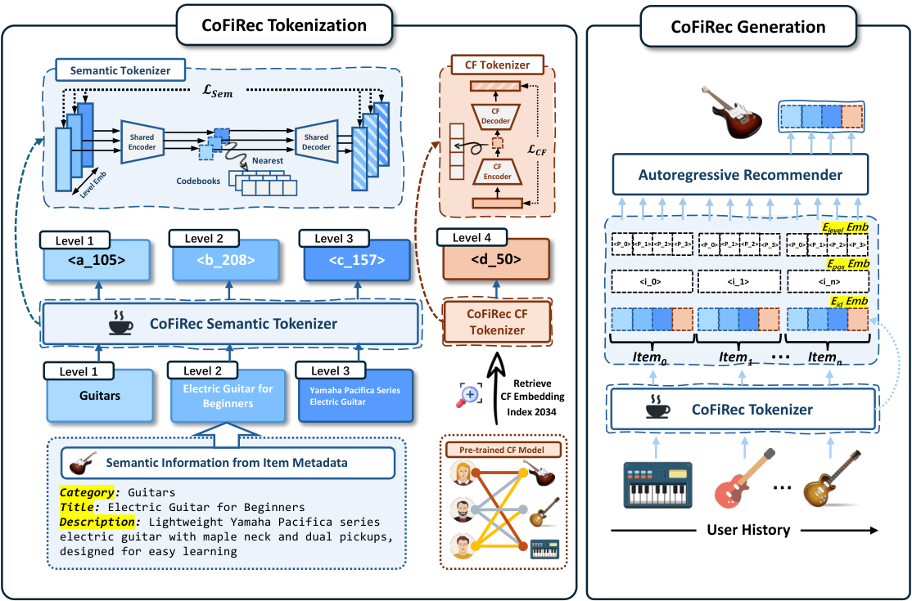
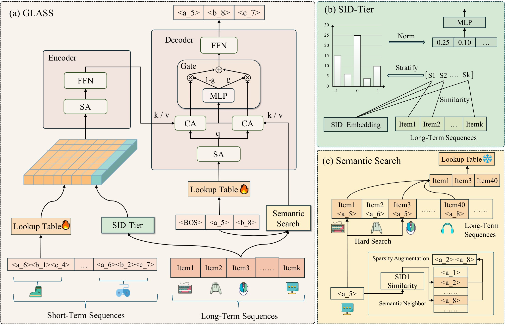
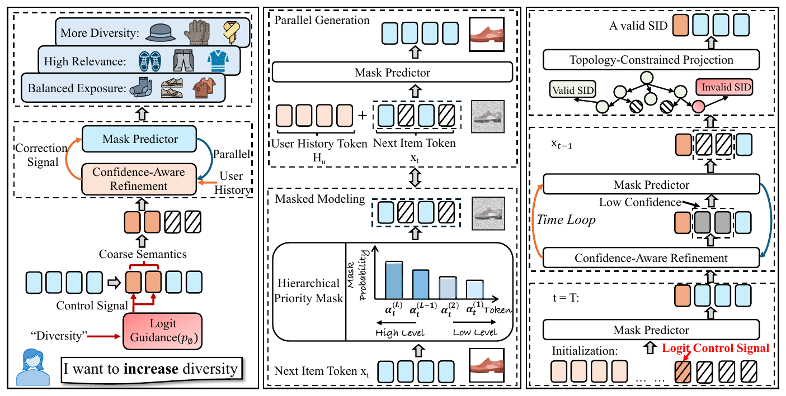
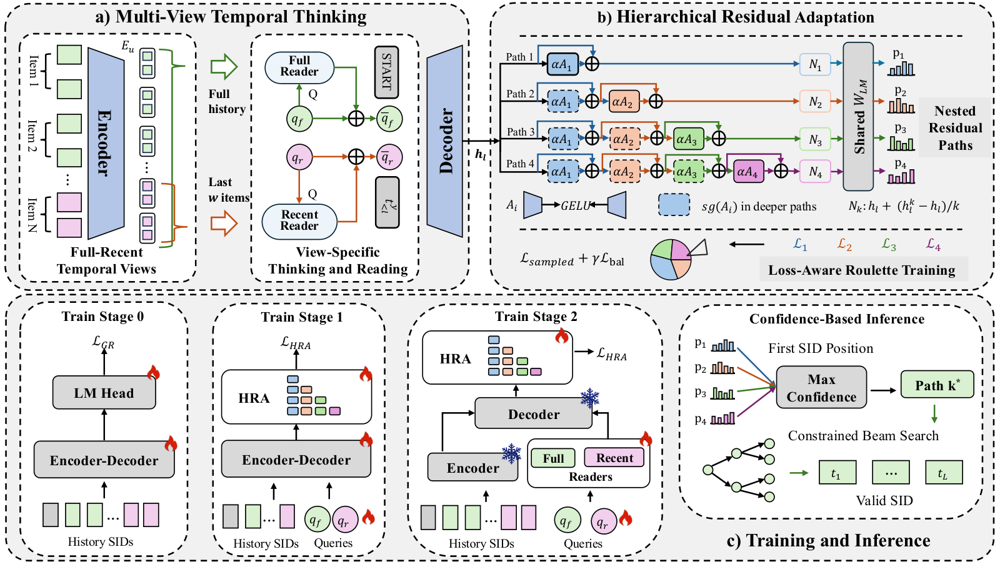
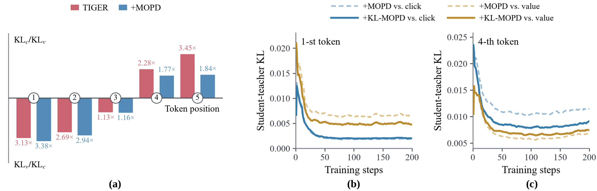
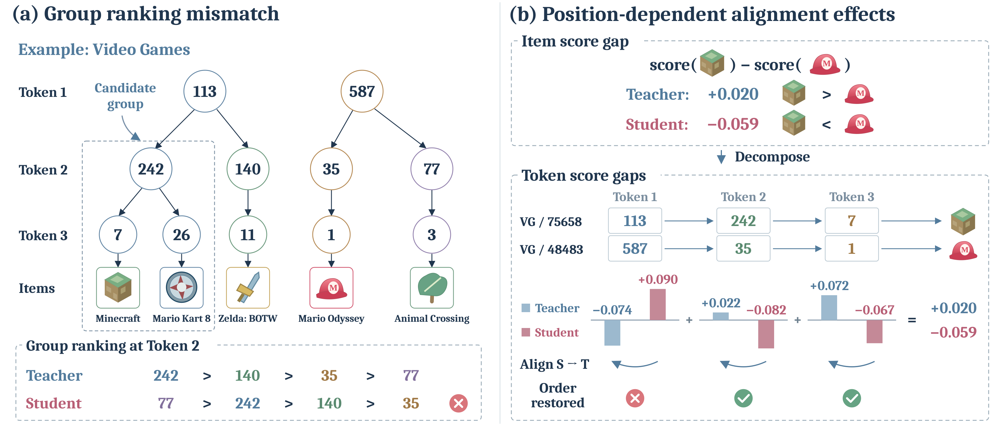
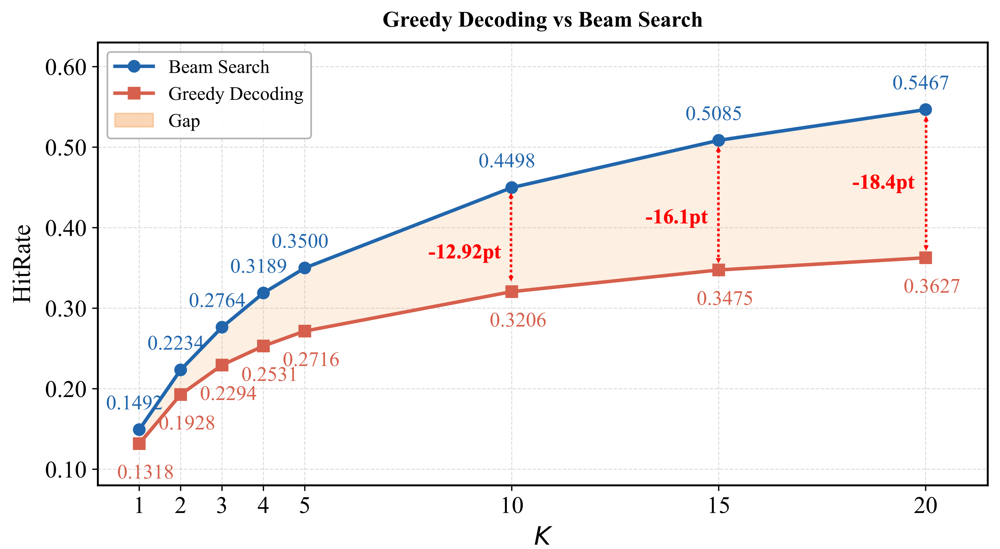

目录 · 10 节
1它到底在解决什么问题？2整体结构：三块改动3前两层码为什么要和协同 embedding 对齐？4老师怎么告诉学生每个分支该有多大概率？5学生到底学哪八个任务？6历史序列里怎么分清"哪个物品、哪一层"？7结果说明了什么8我认为它的局限9一个推荐团队可以怎么试10值不值得读生成式推荐逐个码地生成物品的 SID，前两层码一旦选错大分支，后面再准也找不回相关物品；而多模态推荐里的 SID 多按图文语义构建，前几个码未必反映哪些物品常被同一批用户购买。这篇论文的 RoFiGR 因此把协同信息集中用在前两层码上。建 SID 时，它让每个物品前两层码向量之和，去贴近一个冻结的序列推荐模型（MISSRec）从用户行为里学到的同一物品的 embedding；生成时再用这个模型当老师：它给每个物品打分，一个分支下所有物品的概率加起来，就是这个分支该有的概率，学生每一步向它学。蒸馏时前两层始终有一份固定的较大权重，另有一小份权重按需分配，多给老师比学生更确信正确分支的那几层。在三个亚马逊数据集上，五个排序指标（HR@10、NDCG@10 等）共 15 组比较全部领先，这 15 组相对最强基线的提升平均约 9.4%。这个数字里有一部分来自更多的解码路数，后面会拆开看。
它到底在解决什么问题？

先看一个示意场景。一家乐器店的商品按图文语义建成 4 层 SID。第一层把商品分成 64 个大类，第二层再细分，第三、四层在细类里认出具体商品。某个用户最近买了电吉他和效果器，下一件真正会买的是一根吉他连接线。
| 示意 | 第一层大类 | 按图文语义 | 按共同购买 |
|---|---|---|---|
| 电吉他 | 弦乐器 | 和木吉他、尤克里里相近 | 常和效果器、连接线一起买 |
| 吉他连接线 | 线材配件 | 和麦克风线、音箱线相近 | 常和电吉他、效果器一起买 |
按图文语义，连接线和电吉他落在两个不同的大类里。生成模型看了这段历史，第一步很可能选"弦乐器"这个大类，那么无论后面三个码多准，连接线都已经出局了。这就是论文说的粗选错误：前面的码决定了哪些商品还能被走到，beam 的预算又有限。
论文用 MACRec（一个分别建文本树和图像树的多模态生成式推荐）作基础，指出它的训练对四层一视同仁，都用同一个交叉熵。可是四层的难度和作用并不一样：第一层没有任何前缀，要在几十个大类里挑；第二层在大类里收窄；第三、四层只在很小的分支里认物品。RoFiGR 想在两个地方把协同信息加进来：建 SID 的时候，和生成的时候。
整体结构：三块改动

整个流程分四步：
| 阶段 | 做什么 | 产出 |
|---|---|---|
| 离线准备 | 训练一个多模态序列推荐模型 MISSRec 当老师并冻结 | 每个物品一个协同 embedding；每段训练历史对全库物品的打分 |
| 建 SID | 文本树、图像树各自做残差量化，前两层对齐协同 embedding | 两棵冻结的 4 层 SID 树 |
| 训练生成器 | 八个任务共用一个 encoder-decoder，加逐层蒸馏 | 学生模型 |
| 线上推理 | 四路 beam search 各自解码，结果按概率平均 | 推荐列表，不调用老师 |
关键分工是：协同信息负责把前两层分好组，老师负责在每一步告诉学生分支之间谁更该选。下面拆开讲。
前两层码为什么要和协同 embedding 对齐？
MACRec 的 SID 按图文内容量化，前两层的大类反映的是"长得像、写得像"。RoFiGR 加了一个对比学习损失：把一个物品前两层选中的两个码向量相加，过一个线性投影，要求它和老师给的同一物品的协同 embedding 最接近，和同一 batch 里其他物品的协同 embedding 拉开。协同 embedding 是老师把物品的 ID、文本、图像三种表示各自归一化后相加得到的，里面带着"谁和谁常被一起买"的信息。
这个约束只加在前两层，后两层照旧只管图文细节。这样分工的理由很直接：前两层决定分支，需要反映购买行为；后两层负责在分支里区分具体商品，图文细节更有用。论文还试过对齐全部四层，效果更差。
效果可以在离散的树上直接看到。论文统计了行为近邻落在第一层同一个分支里的比例。行为近邻是在训练历史里相隔 1 到 3 个位置内经常一起出现的物品对，每个物品最多取 20 个。在乐器数据集的文本树上，不对齐时是 13.89%，对齐后是 31.87%。第一层的有效分支数仍超过 62 个（满分 64），而且没有空分支。有效分支数是按物品在各分支上的分布算熵、再取指数得到的：物品均匀分到 64 个分支时正好是 64，越挤向少数分支就越小。这说明对齐把行为相近的物品聚到了一起，但没有把所有物品挤进少数几个大类。
老师怎么告诉学生每个分支该有多大概率？
普通的 next-token 训练只告诉学生"正确的子分支是哪个"，其他分支谁好谁差完全不提。RoFiGR 用老师补上这一块。老师是一个逐物品打分的序列推荐模型，它给每个物品一个分数。在训练时给定正确的前缀后，把每个合法子分支下所有物品的分数取指数加起来，再在合法子分支之间归一化，就得到老师眼中每个分支的概率。
举个例子，论文图里的示意：某一层有三个子分支，第一个分支下三个物品的概率是 0.30、0.21、0.06，第二个是 0.25、0.08，第三个是 0.10。加起来，三个分支的老师概率就是 0.57、0.33、0.10。学生在这一层的输出也只在这三个分支上做 softmax，损失是老师分布和学生分布之间的 KL。只有"能对应到真实物品"的合法分支参与，学生不会被要求给一个空分支分概率。
为什么还需要按层分配权重？四层都用同样的蒸馏权重，最难的第一层得不到额外照顾。RoFiGR 的权重分两部分。第一部分是固定的锚定权重，第一层 0.10、第二层 0.075、后两层 0，保证粗选从训练一开始就有老师信号。第二部分是一份总量 0.015 的浮动权重，按"需求"分给各层：每层的需求先做指数滑动平均，再取 1.5 次方，按各层所占比例分这 0.015。
需求的算法是：看正确子分支上，老师给的概率比学生高多少，再比"按物品数随便猜"高多少，两个差距都取对数，取较小的那个；小于 0 就记 0。举个手算的例子（示意）：第一层上老师给正确分支 0.30，学生只给 0.10，这个分支物品数占比是 0.05，两个对数差约为 1.10 和 1.79，需求取 1.10。第三层上老师给 0.5，学生已经给到 0.6，需求就是 0。于是这份浮动权重几乎全给第一层，第一层的总权重约为 0.10 加 0.015。分母里还加了一个极小的常数，所以实际分出去的总量是 0.015 乘以"需求总和除以（需求总和加这个常数）"：所有层的需求都接近 0 时，浮动部分也接近 0，只剩固定锚定权重；需求变大后，总量才逐渐接近 0.015。训练最初 1% 的步数里浮动部分不启用，等滑动平均先积累起来。取较小的差，是为了不在老师只是复述目录分布的地方浪费权重。 Hoot 说

老师确有见识（正文例子）
- 老师 / 学生 / 目录占比
- 0.30 / 0.10 / 0.05
- 两个对数差
- ln 3 ≈ 1.10，ln 6 ≈ 1.79
- 需求
- 1.10，多分浮动权重
老师只是复述目录（示意）
- 老师 / 学生 / 目录占比
- 0.06 / 0.02 / 0.05
- 两个对数差
- ≈ 1.10，≈ 0.18
- 需求
- 0.18，基本不分
RoFiGR 的贡献是按层把老师的蒸馏力度分给最需要的地方。需求 = min(ln(老师/学生), ln(老师/目录占比))，小于 0 记 0。左边是论文正文的例子；右边是示意的对照：老师只给正确分支 0.06，几乎等于这个分支在目录里的占比 0.05，说明老师没比瞎猜多知道什么。虽然学生落后老师很多，需求也只有 0.18。 出处: 左：论文正文示意例子；右：示意对照，对应论文 §3 需求公式
学生到底学哪八个任务？
学生是一个 T5 结构的 encoder-decoder，八个任务共用它，每个任务有自己的 soft prompt。其中六个沿用 MACRec：用文本码历史生成下一个物品的文本码、用图像码历史生成下一个图像码；用一种模态的历史生成另一种模态的下一个码（两个方向各一个）；以及不看历史，把同一物品的文本码和图像码互相翻译（两个方向各一个）。RoFiGR 新加两个：历史里每个物品同时给出文本码和图像码，分别生成下一个物品的文本码和图像码。带历史的六个任务都加蒸馏，两个互译任务不加。
线上只用其中四个任务头各解码一路：文本历史生成文本码、图像历史生成图像码、双模态历史生成文本码、双模态历史生成图像码。每一路用受前缀树约束的 beam search（beam 20）生成完整的 4 个码，每个完整 SID 只对应一个物品，所以能直接换回物品 ID。每一路先在自己的候选里把物品概率归一化，再把四路的概率取平均，某一路没出现的物品在那一路记 0，最后按平均分排序。
历史序列里怎么分清"哪个物品、哪一层"？
每个历史物品有 4 个文本码和 4 个图像码，20 个物品展平后是一长串 token。只靠 token 距离，模型分不清两个相邻的 token 属于同一个物品，还是一个物品的末尾和下一个物品的开头。RoFiGR 在 encoder 第一层的 attention 上加了两个偏置：一个看两个 token 隔了几个物品，一个看被读取的 token 来自 SID 的哪一层。具体做法是每个注意力头各有两张可学习的小表：一张按物品间隔查一个数，间隔截在前后 19 个物品以内，共 39 档；另一张按被读取 token 的层号（4 层）和两者相隔的物品数查一个数，物品数分成 11 档：前后 2 个物品以内逐个分开，再远就合并成 3 到 4、5 到 8、9 及以上这样的大档。两个数和 T5 原有的 token 距离偏置一起加到这一对 SID token 的 attention 分数上，所以模型能分清物品边界，也知道信息来自哪一层。6 个头乘以（39 加 4 乘 11），一共 498 个参数，零初始化，decoder 不动。
结果说明了什么
三个数据集来自亚马逊评论，乐器、艺术用品、游戏，物品数在 6,250 到 13,839 之间，每个用户最后一次交互作测试，在全库上排序，五个随机种子取平均。下面是 NDCG@10：
| 数据集 | MACRec | SynGR | RoFiGR | 相对最强基线 |
|---|---|---|---|---|
| 乐器 | 0.1023 | 0.1137 | 0.1208 | +6.245% |
| 艺术用品 | 0.0920 | 0.0992 | 0.1093 | +10.181% |
| 游戏 | 0.0564 | 0.0540 | 0.0642 | +13.830% |
三个数据集上 HR@10 和 NDCG@10 对最强基线的提升，在五个种子的配对检验和多重比较校正后都显著。但要注意，主表里 RoFiGR 用四路解码，基线保留了各自原生的两路。
论文自己做了拆分，这张表更能说明问题（NDCG@10 乘 100）：
| 训练任务 / 解码路数 | 乐器 | 艺术用品 | 游戏 |
|---|---|---|---|
| MACRec 8 个任务 / 两路 | 10.389 | 9.369 | 5.699 |
| RoFiGR 8 个任务 / 两路 | 11.454 | 10.368 | 6.050 |
| RoFiGR 8 个任务 / 四路 | 12.085 | 10.928 | 6.425 |
| RoFiGR 四路但候选截到 40 个 | 11.528 | 10.322 | 6.029 |
同样八个任务、同样两路解码，RoFiGR 在乐器上比 MACRec 高约 1.07 个点，这反映了任务和解码都相同时 RoFiGR 整套改动的贡献，包括前两层对齐、结构注意力偏置和分支蒸馏。从两路换成四路又多了约 0.63 个点。但四路各用 beam 20 解码后，在融合前按每路自己的排名轮流挑，最多留 40 个不重复的物品，再在留下的物品上重新归一化、平均，结果和两路几乎一样，说明四路的收益有相当一部分依赖更大的候选集合。不过在同为 80 个 beam 位置的对照里，四路在三个数据集上仍都超过两路，所以候选数量和融合本身的贡献没有被完全分开。

消融里每个部件都有贡献。在乐器上，去掉分支老师、改成均匀分配合法分支概率、去掉前两层对齐，NDCG@10 掉得最多，在 0.9 到 1.0 个点左右。只去掉浮动权重，在验证集上 NDCG@10 下降约 6%。在艺术用品数据集上，文本树第一层码的贪心预测准确率从 MACRec 的 17.73% 升到 22.53%，说明收益确实落在粗选上。
我认为它的局限
第一，数据集很小。三个数据集最多一万多个物品、四万多个测试用户，第一层只有 64 个分支。工业目录动辄千万级，前两层的分组和这里差别很大，对齐是否还能让一起购买的物品聚到同一前缀，论文没有大规模实验。
第二，老师的缓存会随规模爆炸。蒸馏目标要预先存好每段训练历史对全库物品的打分，游戏数据集上全量 FP16 缓存就要 6.360 GiB，大小正比于历史条数乘物品数。论文试了只存老师分数最高的前 K 个物品的压缩办法：K 越大，缓存的分布离完整老师分布越近，但学生的排序效果并不随之单调变好，在 K=2000 处还出现了不单调的结果。
第三，主表的提升混着解码预算。四路解码在乐器上把平均延迟从 31.8 ms 提到 56.7 ms，而同等候选数下四路和两路几乎打平。只看主表的 9.4% 会高估方法本身。
一个推荐团队可以怎么试
- 先诊断粗选是不是瓶颈。在现有生成式召回上统计正确前缀在每一层 beam 里的存活率，如果大部分丢失发生在第一、二层，这篇的思路才值得试。
- 最便宜的一步是前两层对齐。用现有的协同 embedding 作目标，在 SID 训练里加一个只作用于前两层码向量之和的对比损失，先看"共同购买物品共享前缀"的比例有没有上升、有没有出现空分支。
- 有一个靠谱的序列推荐模型时，再加分支蒸馏。离线算好老师分数，先只在前两层加固定权重的 KL，再加按需求分配的浮动权重，比较每一步的增量。
- 评估时固定候选总数，比如都截到同样多个，避免把解码预算的收益算到方法头上。
值不值得读
生成式推荐的错误大多在前两层就已经犯下，把协同信息集中用在这里，比四层平均用力更划算。
| 维度 | 评价 |
|---|---|
| 问题重要性 | 高。粗选错误会直接让相关物品不可达，多模态 SID 尤其明显 |
| 方法创新性 | 中。对齐、蒸馏都是已有工具，新意在只对齐前两层和按层需求分配蒸馏权重 |
| 实验证据 | 中。对照做得很细，有配对检验；但只在三个小数据集上，主表混着解码预算 |
| 工程成本 | 中。线上不调老师，但离线要训老师并缓存全库打分，规模大时存储压力明显 |
| 是否值得尝试 | 前两层对齐值得先试；分支蒸馏要先确认粗选确实是瓶颈 |
读完这篇，你觉得
夜读鸮记下了，谢谢你的反馈。
点一下即可，无需登录；再点一次撤回。只统计匿名次数，不记录你是谁。
相关论文RELATED

Generative · 2026-10-27CoFiRec: Coarse-to-Fine Tokenization for Generative Recommendation用户在网上挑东西，通常是先看大类再挑具体商品，但大多数生成式推荐在编 Semantic ID 时，把物品的类目、标题、描述和协同信号揉成一个向量再量化，这种由粗到细的结构就丢了。UIUC 和 Meta 的这篇论文提出 CoFiRec，按类目、文本内容、协同信号分层，各层单独编码，再由粗到细地生成。在多个公开数据集和不同骨干模型上，按 Recall 和 NDCG 计算，它比最强的传统和生成式基线平均高 7.27%。冷门物品上的提升达到 10.0%，高于热门物品上的 4.7%。
Generative · 2026-10-24Coarse-to-Fine Long-term Interest Modeling for Generative Recommendation生成式推荐一个码一个码地生成下一个物品的 Semantic ID，注意力计算量随序列长度平方增长，所以这类模型通常只吃最近几十条行为，用不上长期历史。GLASS 按 Semantic ID 的层级分开用长期历史。生成第一层码之前，它给每个一级码取该类物品向量的平均当原型。再把余弦相似度区间等分成若干档，统计长期历史里和原型的相似度落在每一档的物品数，所有一级码的计数拼起来经一个小网络压成一个兴趣 token 送进编码器；第一层码生成之后，拿它当检索键，从长期历史里取出同一大类的物品，辅助生成后两层码。在 TAOBAO-MM 上，R@1 比最强基线高 21.57%；短视频平台两周 A/B 中，召回率绝对提升 3 个百分点。
Generative · 2026-10-23Controllable Generative Recommendation via Guided Token Refinement生成式推荐按左到右逐个生成物品 ID 的 token，推理时想临时提高多样性，只能中途改某一位，结果常拼出目录里不存在的 ID。ReGen 改用双向 Transformer 一次预测 ID 的全部 4 位，只在最粗的几位上给用户历史里常见的 token 值减分，再把置信度低的位遮住重新预测，并用全部合法 ID 建成的前缀树排除补不成真实物品的 token 值，全程不改模型参数。Amazon Instruments 上把 top-10 品类覆盖率从 0.41 提到 0.59，Recall@10 只从 0.0427 降到 0.0394，TIGER-MMR 同区间从 0.0433 掉到 0.0319；去掉前缀树后只有 27.63% 的 ID 对应真实物品。
Generative · 2026-11-04Think Globally, Generate Personally: Multi-View Thinking with Adaptive Generation for Generative Recommendation做 SID 生成式推荐时，用户最近冒出来的新兴趣常被大量老行为盖住，所有用户也共用同一套输出变换。论文在 TIGER 这类模型上补这两处。生成之前，模型额外加两个专门的思考 token，一个只读用户的全部历史，一个只读最近几件物品。读出的两个向量排在解码器输入开头，生成每个码时都能参考。生成的时候，解码器输出的向量先过一组深浅不同的小适配模块，每个用户只走其中一条：看哪条路径在第一个 SID 位置给出的最高概率最大，就选哪条，不看深浅。在 Amazon Instruments 上，把所有测试用户的前 20 个推荐合在一起，出现过的不同 SID 占全部 SID 的比例从 TIGER 的 19.56% 提到 25.50%，命中率也更高。代价是三段式训练更繁琐，公开数据的历史也比线上短得多。 Generative · 2026-11-04Diverse-Teacher On-Policy Distillation for Generative Recommendation让学生模型自己生成、老师逐位给出完整概率的蒸馏（OPD）能让生成式推荐训得更快，但学生会越来越偏向热门商品。原因有两头：老师的概率本来就偏爱热门商品的 SID，学生自己生成时也很少走到冷门商品的 SID，这些路径几乎拿不到监督。HERO 先按商品在训练数据里出现的次数分出热门和冷门两组，各从头训练一个老师并冻结。蒸馏时，每条样本按真实点击的商品属于哪一组，交给对应的老师。学生用束搜索自己生成几条 SID，在每一位上去贴近这位老师给的完整概率。如果真实商品是冷门的，它的真实 SID 也作为一条额外路径，学生在这条路径的每一位上也贴近冷门老师。上线只用学生。在 1688 首页「猜你喜欢」的 15 天 A/B 里，GMV 提升 3.412%。
Generative · 2026-11-04Diverse-Teacher On-Policy Distillation for Generative Recommendation让学生模型自己生成、老师逐位给出完整概率的蒸馏（OPD）能让生成式推荐训得更快，但学生会越来越偏向热门商品。原因有两头：老师的概率本来就偏爱热门商品的 SID，学生自己生成时也很少走到冷门商品的 SID，这些路径几乎拿不到监督。HERO 先按商品在训练数据里出现的次数分出热门和冷门两组，各从头训练一个老师并冻结。蒸馏时，每条样本按真实点击的商品属于哪一组，交给对应的老师。学生用束搜索自己生成几条 SID，在每一位上去贴近这位老师给的完整概率。如果真实商品是冷门的，它的真实 SID 也作为一条额外路径，学生在这条路径的每一位上也贴近冷门老师。上线只用学生。在 1688 首页「猜你喜欢」的 15 天 A/B 里，GMV 提升 3.412%。
Generative · 2026-10-29KL-MOPD: Discrepancy-Aware Multi-Objective On-Policy Distillation for Generative Recommendation把点击老师和价值老师一起蒸馏进生成式推荐时，每个 token 平分权重并不公平：在 TencentGR 上，学生生成第 1 个 token 时离价值老师的 KL 是离点击老师的 3.13 倍，而且难学的老师在后两个 token 换成了点击老师。浙大和阿里的 KL-MOPD 在训练前算一次学生离两个老师的距离，每个 token 上离得更远的老师拿更大的权重，训练时没有额外开销。线上 A/B 中，广告收入提升 1.63%，说明点击和价值两个目标一起涨了。
Generative · 2026-10-28MuSID-KD: Multigranularity Knowledge Distillation for Generative Recommendation with Semantic IDs把 SID 生成式推荐模型蒸馏成小模型时，通常只让学生对齐教师在最终推荐物品上的概率分布。华东师大的 MuSID-KD（一种按 SID 层级做多粒度蒸馏的方法）发现这样不够：只对齐物品分布的学生，在 SID 中间层给候选组排出的先后，平均有 53.8% 的比较和教师不一致。教师的知识不只在最后一层的物品概率里，也在每一层前缀的排序里。在三个 Amazon 数据集上，它的 NDCG@10 比基础蒸馏平均高 8.31%，线上推理结构完全不变。
Generative · 2026-10-28SLIDE: Search-to-List Item Distillation for Single-Rollout Generative Retrieval生成式召回线上通常用束搜索出候选，各条束互不可见；想让模型一口气写出整张列表，最直接的贪心解码效果却差得多。淘宝的 SLIDE（一种把离线搜索结果蒸馏成列表的训练方法）把搜索挪到离线：教师对每个训练请求跑束搜索，把搜出的商品按得分拼成一条长序列，学生照着学，线上只贪心解码一遍。它把线上的搜索成本换成了离线的标注成本。教师用 7B 时，0.5B 学生的 HR@10 达到 0.4578，反超同尺寸模型束搜索的 0.4498。
讨论
欢迎补充实验细节、复现经验或不同看法。需 GitHub 登录。
正在加载讨论…